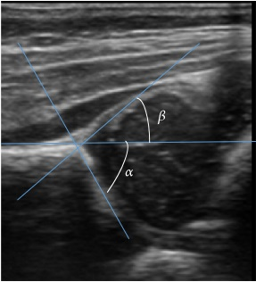

Ficha del catálogo
Displasia del desarrollo de la cadera
- Sistema
- Óseo
- Modalidad
- US
- Región
- Cadera del lactante
- Dificultad
- Intermedio
Alteración del desarrollo de la articulación coxofemoral en la que el acetábulo es poco profundo y la cabeza femoral puede subluxarse o luxarse. Es más frecuente en niñas, en presentación de nalgas y cuando hay antecedentes familiares. El diagnóstico precoz permite un tratamiento sencillo con arnés, mientras que el retraso lleva a cirugía.
Técnica
Ultrasonido de cadera con sonda lineal en el plano coronal estándar, realizado idealmente entre las cuatro semanas y los cuatro a seis meses de vida, antes de la osificación de la cabeza femoral.
Qué observar
- Cobertura de la cabeza femoral por el techo acetabular óseo
- Morfología del techo óseo, que debe ser angulado y no redondeado o plano
- Posición de la cabeza femoral respecto a la línea de la pared ilíaca
- Labrum acetabular desplazado o evertido en las caderas inestables
- Maniobras dinámicas que demuestren desplazamiento de la cabeza
- Comparación sistemática con la cadera contralateral
Hallazgos
Acetábulo displásico con techo poco angulado y cobertura insuficiente de la cabeza femoral, con o sin desplazamiento durante las maniobras dinámicas.
Perlas
Después de los cuatro a seis meses la cabeza femoral se osifica y bloquea el ultrasonido, por lo que a partir de esa edad el estudio de elección pasa a ser la radiografía de pelvis con las líneas de referencia.
Diagnóstico diferencial
- Cadera inmadura fisiológica
- Hallazgos límite en menores de seis semanas que normalizan en el control.
- Artritis séptica del lactante
- Derrame con contenido y contexto clínico febril.
- Luxación teratológica
- Luxación rígida e irreductible asociada a otras malformaciones.
Simuladores
- Plano de exploración incorrecto
- Presión excesiva con la sonda
- Cartílago no osificado interpretado como defecto
Por modalidad
- US
- Método de elección antes de la osificación de la cabeza femoral
- RX
- Estudio de elección a partir de los cuatro a seis meses
- RM
- Valoración postquirúrgica y de reducción concéntrica
Protocolo
Ultrasonido en plano coronal estándar con la cadera en posición neutra, más estudio dinámico con maniobras de estrés, evaluando ambas caderas.
Clasificación
Los sistemas ecográficos clasifican la cadera combinando la morfología del techo óseo y la cobertura de la cabeza femoral, definiendo caderas maduras, inmaduras, displásicas y luxadas.
Errores frecuentes
- Explorar fuera de la ventana de edad adecuada para cada técnica
- No obtener el plano coronal estándar y medir sobre imágenes no válidas
- Omitir el estudio dinámico de inestabilidad

displasia cadera lactante ecografia acetabulo luxacion arnes cribado